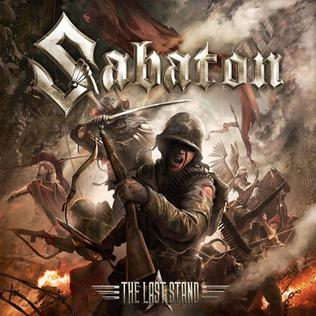

i am Marco E. Valencia
i am a student in CPSU
Hello There
about me
Hi, my name is Marco Valencia and I'm a 22-year-old student currently studying at CPSU. I'm passionate about learning and I enjoy exploring new subjects and expanding my knowledge.
age : 22
gender : male
language : Bisaya
occupation : student
School Year
Since 2014
Hobbies
Favorite
My favorite anime among Dragon Ball, Bleach, and One Piece is "One Piece". The show has captivating world-building, a diverse cast of characters, and explores themes of friendship, loyalty, and adventure. The story follows Monkey D. Luffy, a young pirate on a journey to find the ultimate treasure known as One Piece. Overall, "One Piece" is a must-watch for any anime fan..

Reading is one of my favorite hobbies, and I particularly enjoy books like Harry Potter and Percy Jackson. I love escaping into magical worlds and unique characters created by talented authors. Whether it's a physical book or an e-book, reading provides endless entertainment and inspiration, and I'm always searching for my next great read..
Playing video games is one of my favorite hobbies, and I enjoy titles like League of Legends, CSGO, and PUBG. These games provide exciting gameplay, competition, and opportunities to socialize with others. I love the adrenaline rush of battling other players and the satisfaction of working together as a team to win. Gaming allows me to relax and have fun while taking a break from daily stresses. Overall, gaming is an engaging hobby that I enjoy in my free time.
Reading webtoons is one of my favorite hobbies, and I love titles like Legend of the Northern Blade, God of Highschool, and Return to Mount Hua Sect. The storytelling, art, and characters in these webtoons keep me engaged and excited for each new chapter. Reading webtoons is a way for me to escape reality and immerse myself in fantastic stories. It's a hobby that provides endless entertainment and inspiration, and I'm always eager to find new titles to read.

"I love listening to music, especially songs like 'Heroes' by Skillet, 'Hero' by Atlantic Records, and 'Last Stand' by Sabaton. The lyrics are powerful and inspiring, and the music itself is energetic and engaging. Listening to music is a way for me to relax and escape from daily stress, and it also motivates and encourages me. It's a hobby that brings me joy and inspiration, and I'm always looking for new songs to add to my playlist.
I love watching movies, especially "Howl's Moving Castle", "Marvel Avengers", and "Spider-Man". The thrilling adventures, engaging characters, and captivating stories keep me on the edge of my seat. Watching movies is a way for me to unwind and indulge in the creativity and imagination of talented filmmakers. Overall, it's a hobby that provides me with endless entertainment and inspiration..